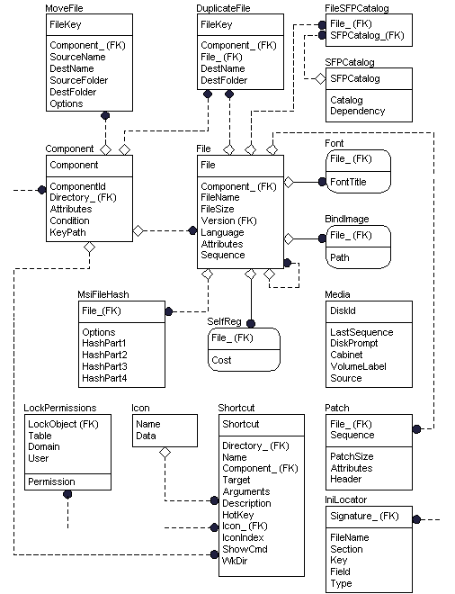

| Platform SDK: Windows Installer |

For more information about this diagram, see the entity relationship diagram legend.
An installer package developer should consider populating the file table group of tables after breaking the application into components and features and after populating the core tables group. The file table group contains all of the files belonging to the installation and most of these files are listed in the File table. The Directory table is not shown in the figure but is closely related to the file table group. The Directory table gives the directory structure of the installation.
The file group of tables contains all of the tables that are related to files.
| What did you think of this topic? Let us know. |
Order a Platform SDK CD Online (U.S/Canada) (International) |